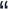

Welcome to the Lichfield Denture Clinic
Do your dentures look like false teeth? If you would like dentures that look more like real teeth then the lichfield denture clinic can help you.
Lichfield Denture Clinic is dedicated to providing the edentulous or partially edentulous (all or some teeth missing) patient with bespoke high quality and highly aesthetic dentures that look as close to natural as possible and fit perfectly.
Matt your dentures are good, they’re not just good, they’re exceptional!
Dr R Doshi,
The Perfect Smile Studios, Dentist.
Just a quick note to say thanks for the denture, it fits and looks a lot better than my old one, it’s even stopped the occasional lisp I had, it’s like having my original teeth back - many thanks
Mr Stokes,
A Lichfield Denture Patient.